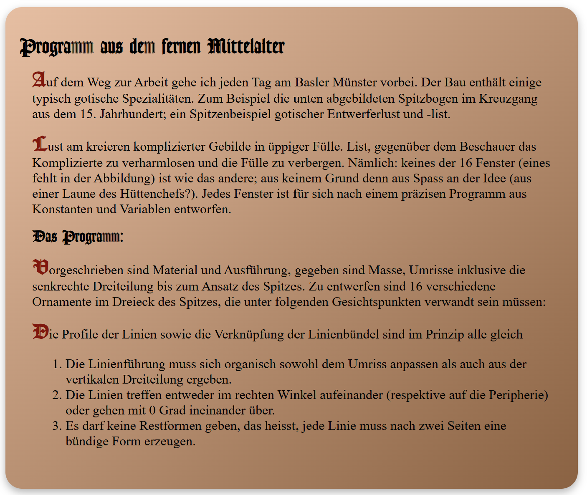
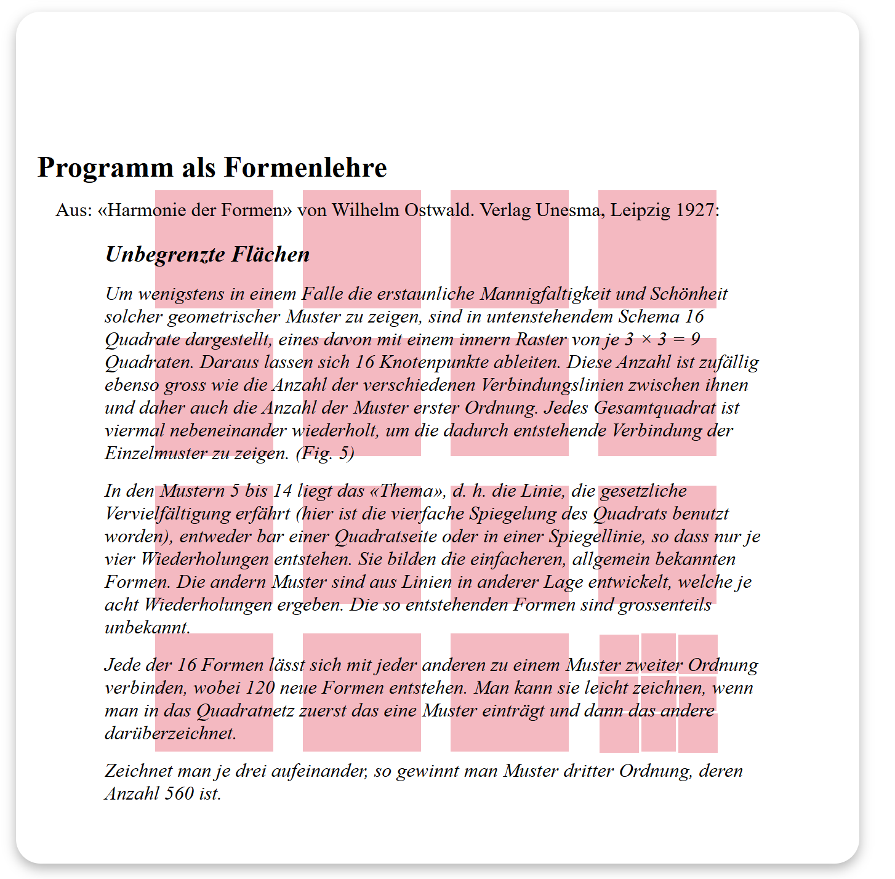

digitale grundlagen
DOKUMENTATION
Lena Buchmann
Gorch-Fock-Str.7
38104 Braunschweig
l.buchmann@hbk-braunschweig.de
Matrikelnummer: 80302
1.2 — text systems
Giving form to something without first reading it seemed reckless. Playfulness does not come naturally to me under certain constraints. Shouldn’t design support its content? Does support equal illustration? Gosh, let me read the content first!
Programm aus dem fernen Mittelalter
The first paragraph was referencing medieval times. Naturally, I wanted to make the page look like parchment, slightly yellowed. In addition I used a font (Lohengrin)that looked like it came from an old book. Within the text I chose to only use Lohengrin for the first letter, to ensure readability. Also, I wanted to further reference medieval styling with the decoration of the initials.

Programm als Formenlehre
The second paragraph was about shapes and described a pattern of 3x3 squares, so I tried to recreate what I imagined Fig.5 to look like in the background. This was, before I knew about grids in html so I painfully drew each shape manually.

What I found hard about this exercise
There were quite some challenges for me within this exercise.
Firstly, I find it difficult to imagine a style for a whole structure. It seems too big for my brain to wrap my head around.
Secondly, I find it hard to come up with an overall concept, I seem to not know where to start. This I would like to learn in the next semester. I would like to think that I could come up with a modern design for a website, or a funky one or something else.
Finally, time was my enemy on this one. I got lost in the details and so I only finished two of the paragraphs, while the others remained blank.